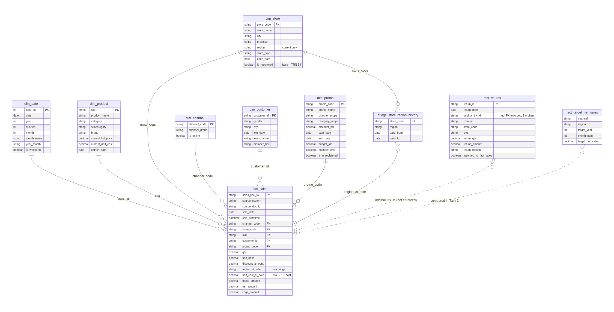

| Nama | Taufiqurrahman |
| NIM | 24130500005 |
| Program Studi | Sains Data |
| Mata Kuliah | Business Intelligence Systems |
| Semester / Kelas | Semester 5 / Professional & Akselerasi |
| Universitas | Universitas Cakrawala |
| Periode UAS | Blok A (28 Oktober - 04 November 2026) |
Direktur Komersial KIRANA Home & Living harus mengambil dua keputusan terkait untuk H2 2026.
Awal Juli 2026, menggunakan data historis 1 Januari 2024 sampai 30 Juni 2026 (FY2025 penuh + H1 2026), untuk diterapkan pada perencanaan H2 2026.
Tim komersial dan finance saat ini punya angka penjualan yang berbeda karena data tersebar di sistem terpisah (POS, e-commerce, target Excel) yang belum pernah diintegrasikan. Direktur Komersial meminta satu sumber angka yang dapat dipercaya dan dashboard yang langsung menjawab pertanyaan bisnis di bawah ini.
| # | Pertanyaan Bisnis | Mendukung Keputusan |
|---|---|---|
| 1 | Bagaimana pencapaian net sales FY2025 dan H1 2026 terhadap target per channel, region, dan toko? | (2) Dasar untuk menilai toko/region mana yang tertinggal dari target |
| 2 | Bagaimana tren, pola musiman, dan pergeseran kontribusi antar-channel? | (1) Dasar alokasi ulang anggaran promo ke channel yang tumbuh |
| 3 | Kategori, channel, dan promo mana yang menekan gross margin dan contribution margin? | (1) Inti keputusan realokasi, membedakan promo yang menguntungkan vs. yang hanya membeli revenue |
| 4 | Seberapa efektif promo dilihat dari kenaikan penjualan dan dampaknya pada margin? | (1) Menentukan mekanisme promo mana yang dilanjutkan atau dihentikan |
| 5 | Toko mana yang berkinerja rendah, dan apakah penyebabnya bisnis atau masalah data? | (2) Inti keputusan program perbaikan toko, exclude kasus yang sebenarnya masalah data |
| 6 | Bagaimana tingkat dan alasan retur per kategori dan channel? | (1) & (2) Retur tinggi bisa mengindikasikan masalah kualitas produk atau masalah operasional toko |
| 7 | Bagaimana aktivitas dan repeat purchase member per channel? | (1) Membedakan promo yang membangun loyalitas vs. yang hanya diskon sekali pakai |
Dashboard Metabase (dibangun di atas model DuckDB bersih, dengan definisi KPI yang disepakati) dan insight brief yang bisa langsung dipakai Direktur Komersial dalam rapat keputusan H2 2026, dengan seluruh angka di laporan sama dengan angka di dashboard.
Profiling dijalankan terhadap seluruh file di Data/raw_data/ sebelum pembersihan apa pun, menghasilkan jumlah baris, hash sumber, baris duplikat penuh, dan grup duplikat kunci untuk tiap tabel.
| Tabel | File Sumber | Baris | Duplikat Penuh | Grup Duplikat Kunci |
|---|---|---|---|---|
| sales_pos_transactions | sales_pos_transactions.csv | 264.420 | 2.990 | 1.597 |
| sales_online_orders | sales_online_orders.csv | 209.626 | 464 | 232 |
| products | products.csv | 606 | 0 | 6 |
| product_cost_history | product_cost_history.csv | 850 | 0 | 0 |
| stores | stores.csv | 18 | 0 | 0 |
| store_region_history | store_region_history.csv | 2 | 0 | 0 |
| store_events | store_events.csv | 1 | 0 | 0 |
| customers | customers.csv | 42.320 | 0 | 0 |
| returns | returns.csv | 18.090 | 0 | 0 |
| promotions | promotions.csv | 73 | 0 | 0 |
| channel_fee_rates | channel_fee_rates.csv | 5 | 0 | 0 |
| pos_sync_log | pos_sync_log.csv | 16.036 | 0 | 0 |
| target_net_sales_2025 / h1_2026 / target_gm | sales_targets_2025_2026.xlsx | 9 / 9 / 4 | 0 | 0 |
Sumber lengkap ada di evidence/task1_profiling/profiling_summary.md dan evidence/task1_profiling/*__columns.csv (profil per kolom tiap tabel).
Setiap isu dicatat dengan jumlah baris dan nilai Rupiah yang terdampak, keputusan penanganan, dan alasannya, supaya tidak ada pembersihan data yang dilakukan tanpa jejak. Daftar lengkap (termasuk kutipan query verifikasi) ada di artifacts/task1/data_quality_issue_log.csv dan artifacts/task1/issue_checks.sql.
| Isu | Ringkasan Masalah | Dampak | Keputusan Penanganan |
|---|---|---|---|
| ISSUE-01 | Baris duplikat persis (re-export) di sales_pos_transactions, kunci (trx_id, line_no) | 1.495 baris dibuang, Rp360,9jt | DISTINCT dedupe di staging, simpan 1 baris per grup identik |
| ISSUE-02 | (trx_id, line_no) tidak unik meski setelah ISSUE-01, karena voucher baris asli berbeda | 204 baris, 102 grup bentrok | Surrogate key sales_line_sk via ROW_NUMBER, grain tidak memakai (trx_id, line_no) |
| ISSUE-03 | Format SKU tidak konsisten (huruf kecil / spasi) | 2.650 baris, Rp645,7jt berisiko gagal join | Normalisasi UPPER(TRIM(sku)) sebelum join ke dim_product |
| ISSUE-04 | Format tanggal online DD/MM/YYYY HH:MM salah terdeteksi "unparseable" oleh cast generik | 209.626 baris (100%) | Parse eksplisit try_strptime dengan format yang benar, bukan TRY_CAST generik |
| ISSUE-05 | Baris duplikat persis di sales_online_orders, kunci (order_no, line_no) | 232 baris dibuang, Rp48,9jt | DISTINCT dedupe di staging |
| ISSUE-06 | 6 SKU punya 2 baris master, versi aktif dan versi lama berakhiran "(old)" | 6 baris dikecualikan, Rp0 (harga/HPP identik) | Kecualikan baris "(old)", pertahankan versi aktif agar dim_product 1 baris per SKU |
| ISSUE-07 | 1 baris retur merujuk original_trx_id yang tidak ada di sales_pos_transactions | 1 baris, Rp178.900 | Baris retur tetap disimpan dan dihitung, ditandai tidak dapat di-join ke fact_sales |
| ISSUE-08 | promo_code "B2B-CORP" dipakai di POS tapi tidak terdaftar di promotions.csv | 14 baris, Rp499,9jt | Baris penjualan tetap masuk fact_sales, dim_promo diberi 1 baris sintetis berstatus "tidak terdaftar" |
| ISSUE-09 | store_code 17 toko nyata muncul dengan variasi huruf kecil/besar | 3.555 baris | Normalisasi UPPER(TRIM(store_code)) di staging |
| ISSUE-10 | store_code "TRN-99" tidak terdaftar di stores.csv, format trx_id juga berbeda dari toko asli | 320 baris, Rp76,4jt | Baris tetap masuk fact_sales, diberi label eksplisit "Toko Tidak Terdaftar" (is_registered=false) |
| ISSUE-11 | item_price online kadang berformat teks "Rp99.900" sehingga TRY_CAST AS DOUBLE gagal | 36.143 baris tersisa setelah dedup | Parsing bertingkat, coba cast polos lalu strip "Rp" dan titik sebelum cast ulang |
| ISSUE-12 | sales_channel punya 12 varian ejaan/singkatan untuk 3 channel yang sama | 31.445 baris | Normalisasi via CASE map ke label kanonik di staging |
| ISSUE-13 | Label region target Store beda ejaan dari label region_at_sale hasil resolusi fact_sales | 108 baris target, Rp40,4 miliar target Store | Normalisasi region target via CASE map eksplisit sebelum join achievement |
| ISSUE-14 | Kategori produk punya varian ejaan/aksen untuk kategori yang sama (Home Decor/Home Décor, dll) | 14 SKU, 12.280 baris, Rp2,3 miliar | Normalisasi via CASE map eksplisit ke ejaan mayoritas di staging.stg_products |
model.fact_salesIdentitas baris tidak memakai kunci baris dari sistem sumber. ISSUE-02 menemukan bahwa (trx_id, line_no) pada sales_pos_transactions.csv tidak unik bahkan setelah duplikat persis dibuang, karena 102 grup (204 baris) memiliki pasangan (trx_id, line_no) yang sama padahal baris jualnya benar-benar berbeda (cashier_id/sku/qty berbeda). Mempercayai pasangan itu sebagai primary key akan diam-diam membuang revenue yang sah. Sebagai gantinya, fact_sales.sales_line_sk adalah surrogate key yang dibuat di staging via ROW_NUMBER() OVER (...), diuji di TEST-01 (blocking) dengan hasil 0 duplikat.
Dipakai sebagai bridge point-in-time bergaya SCD2, di-join saat fact dibangun, tidak dilipat ke dalam dim_product. dim_product hanya membawa atribut deskriptif terkini (nama/kategori/brand/harga sekarang) dengan SCD Type 1, karena atribut itu jarang berubah dan tidak memengaruhi perhitungan historis. unit_cost, sebaliknya, langsung menentukan HPP dan gross margin untuk penjualan historis, dan sumber data sudah memberi timeline SCD2 yang bersih (valid_from/valid_to per SKU). Bila ini salah ditangani, misalnya selalu memakai harga terkini, setiap penjualan sebelum perubahan harga terakhir akan menghitung margin dengan harga yang tidak berlaku saat itu, diam-diam mendistorsi gross margin dan contribution margin historis, yaitu KPI yang mendasari keputusan realokasi promo.
Cakupan SCD2 penuh disintesis di model.bridge_store_region_history, di-join saat fact dibangun, bukan dibaca langsung dari dim_store. store_region_history.csv hanya mencatat toko yang benar-benar pernah pindah region (1 toko, BGR-01, pindah dari Jawa Barat ke Jabodetabek pada 2025-07-01). 17 toko lain disintesis sebagai baris "selalu berlaku" sejak 2024-01-01. Bila ditangani salah, setiap penjualan BGR-01 sebelum tanggal pindah akan terhitung ke target Jabodetabek, bukan Jawa Barat, padahal angka itu persis yang dipakai keputusan toko/region. TEST-05 (blocking) memverifikasi bridge ini tidak punya rentang tanggal yang tumpang tindih per toko.
Dua penanganan tambahan memakai pola yang sama, eksplisit dan tidak diam-diam jadi NULL. ISSUE-09 (normalisasi huruf besar/kecil store_code) dan ISSUE-10 (store TRN-99 diberi label eksplisit "Toko Tidak Terdaftar" alih-alih dibuang atau dipaksa cocok ke toko lain).

Setiap tabel di atas berada di skema model.* pada DuckDB (mis. model.dim_store, model.fact_sales). model.fact_returns.original_trx_id dan model.fact_target_net_sales terhubung ke fact_sales sebagai referensi longgar (garis putus-putus), bukan foreign key yang dipaksakan database, karena 1 baris retur tidak bisa dicocokkan (ISSUE-07) dan target memiliki grain independen yang baru dibandingkan di lapisan metric view (Task 3).
| Tabel | Tipe | Grain |
|---|---|---|
| dim_date | Dimension | 1 baris per tanggal kalender, 2024-01-01..2026-12-31 |
| dim_product | Dimension (SCD1) | 1 baris per SKU (setelah dedup ISSUE-06) |
| dim_store | Dimension (SCD1) | 1 baris per store_code (18 toko nyata + 1 tidak terdaftar, ISSUE-10) |
| dim_channel | Dimension | 1 baris per channel (4) |
| dim_customer | Dimension (PII diminimalkan) | 1 baris per customer_id + 1 baris NON_MEMBER |
| dim_promo | Dimension | 1 baris per promo_code (+ NO_PROMO + B2B-CORP tidak terdaftar, ISSUE-08) |
| bridge_store_region_history | SCD2 bridge | 1 baris per periode validitas region toko |
| fact_sales | Fact | 1 baris jual yang sudah diselesaikan (lihat grain statement) |
| fact_returns | Fact | 1 baris item retur (= grain returns.csv) |
| fact_target_net_sales | Fact | 1 angka target (channel, region, year, month), hasil unpivot sheet lebar sumber |
Diagram visual lengkap ada di artifacts/task2/star_schema.drawio.
model.dim_customer mengecualikan full_name, phone, email, dan birth_date sepenuhnya, dibuang di staging.stg_customers, tidak pernah dimuat ke lapisan model, sehingga tidak bisa sampai ke Metabase bahkan secara tidak sengaja.
Dijalankan di sql/04_quality_tests.sql, hasilnya ditulis sebagai log append-only ke model.dq_test_results setiap kali pipeline berjalan. Satu pengujian (TEST-04) sengaja dibuat gagal untuk menunjukkan kasus yang memang perlu ditandai sebagai peringatan, bukan dipaksa lolos.
| Test | Nama Pengujian | Klasifikasi | Baris Gagal | Lolos | Keterangan |
|---|---|---|---|---|---|
| TEST-01 | sales_line_sk pada fact_sales unik | blocking | 0 | Ya | Surrogate key harus unik, kalau tidak seluruh agregat turunan salah |
| TEST-02 | sku pada dim_product unik | blocking | 0 | Ya | SKU ganda di dim_product merusak setiap join fact_sales (ISSUE-06) |
| TEST-03 | qty dan unit_price pada fact_sales tidak null | blocking | 0 | Ya | Baris jual tanpa qty/harga tidak bisa dijumlahkan ke net sales |
| TEST-04 | original_trx_id pada fact_returns selalu cocok ke fact_sales | warning | 1 | Tidak | Sengaja gagal (1 baris, ISSUE-07), kemungkinan celah pos_sync_log, bukan retur yang harus dibuang |
| TEST-05 | bridge_store_region_history tidak punya rentang tanggal tumpang tindih per toko | blocking | 0 | Ya | Rentang tumpang tindih membuat join region-at-sale menghasilkan baris ganda |
| TEST-06 | member_tier pada dim_customer adalah nilai yang dikenal | warning | 0 | Ya | Nilai tier tak terduga akan diam-diam lolos dari segmentasi efektivitas promo per tier |
| TEST-07 | region_at_sale pada fact_sales tidak pernah null | blocking | 0 | Ya | Region null akan diam-diam hilang dari setiap rollup tingkat region |
| TEST-08 | channel_code pada fact_sales salah satu dari 4 channel yang dikenal | warning | 0 | Ya | Kode channel tak dikenal gagal join dim_channel dan hilang dari KPI per-channel |
| Lapisan | Baris Raw | Baris Fact | Baris Dibuang | Nilai Raw (Rp) | Nilai Fact (Rp) | Catatan |
|---|---|---|---|---|---|---|
| sales_pos_transactions → fact_sales (POS) | 264.420 | 262.925 | 1.495 | 62.685.251.700 | 62.324.356.200 | ISSUE-01, nilai tidak berubah oleh perbaikan normalisasi lain |
| sales_online_orders → fact_sales (ONLINE) | 209.626 | 209.394 | 232 | 47.493.993.000 | 47.445.077.400 | ISSUE-05, nilai raw dihitung dengan parsing string Rp yang sama seperti staging |
| returns → fact_returns | 18.090 | 18.090 | 0 | 3.702.006.200 | 3.702.006.200 | Tidak ada baris dibuang, termasuk 1 orphan ISSUE-07 yang ditandai matched_to_fact_sales=false |
Detail lengkap ada di evidence/task2_model/quality_tests_results.csv, evidence/task2_model/reconciliation.csv, dan evidence/task2_model/row_counts_by_layer.csv.
10 KPI (melebihi minimum 8), seluruhnya diimplementasikan sebagai VIEW di model.* (sql/06_kpi_views.sql), supaya setiap pertanyaan dashboard memakai definisi, filter inklusi/eksklusi, dan resolusi dimensi yang identik. Aturan eksklusi global yang berlaku ke semua KPI penjualan adalah online order_status='CANCELLED' dibuang (12.733 dari 209.626 baris online), nilai net sales memakai net_amount yang sudah dinetkan dari diskon/voucher, dan biaya channel dihitung bertingkat waktu terhadap staging.stg_channel_fee_rates (komisi Marketplace naik dari 9,0% ke 11,5% per April 2025).
| KPI | Definisi Bisnis | Rumus SQL | Metric Owner |
|---|---|---|---|
| 01. Net Sales | Nilai penjualan bersih setelah diskon/voucher, tidak termasuk order yang dibatalkan | SUM(net_amount) dari vw_sales_metrics | Direktur Komersial |
| 02. Achievement vs Target % | Realisasi net sales dibanding target bulanan, per channel & region | 100*actual/target, vw_achievement_monthly | Direktur Komersial |
| 03. Gross Margin % | Margin kotor setelah HPP, sebelum biaya channel | 100*SUM(net_amount-cogs_amount)/SUM(net_amount) | Direktur Komersial / Finance |
| 04. Contribution Margin % | Margin setelah HPP dan biaya channel, margin riil per channel | 100*SUM(net_amount-cogs_amount-channel_fee_amount)/SUM(net_amount) | Direktur Komersial |
| 05. Return Rate | Proporsi nilai refund terhadap net sales (berbasis nilai, bukan unit) | 100*SUM(refund_amount)/SUM(net_amount) | Manajer Operasional |
| 06. AOV | Rata-rata nilai bersih per transaksi/order, bukan per baris item | SUM(net_amount)/COUNT(DISTINCT source_doc_id) | Manajer Channel |
| 07. Jumlah Transaksi | Jumlah order/struk unik, bukan jumlah baris item | COUNT(DISTINCT source_doc_id) | Manajer Channel |
| 08. Active Members | Jumlah member unik (bukan guest) dengan minimal 1 transaksi dalam periode | COUNT(DISTINCT customer_id) dari vw_customer_order_monthly | Tim CRM / Loyalty |
| 09. Repeat Rate | Proporsi member yang bertransaksi lebih dari 1 kali sepanjang window data | 100*SUM(is_repeat_customer)/COUNT(*) dari vw_customer_lifetime | Tim CRM / Loyalty |
| 10. Promo Lift | Kenaikan/penurunan AOV ketika transaksi memakai promo dibanding tidak, per kategori | (AOV_promo-AOV_nonpromo)/AOV_nonpromo*100 | Tim Marketing / Promo |
Setiap angka sanity check KPI di atas diverifikasi langsung terhadap db/kirana.duckdb. Definisi lengkap (grain, inklusi/eksklusi, target/ambang, dan query sanity check) ada di artifacts/task3/kpi_dictionary.md. Lima view yang mendukung seluruh KPI adalah vw_sales_metrics, vw_returns_metrics, vw_achievement_monthly, vw_customer_order_monthly, dan vw_customer_lifetime, seluruhnya CREATE OR REPLACE VIEW tanpa materialisasi.
Ada dua keputusan yang perlu diambil, yaitu (1) realokasi anggaran promo dan (2) penentuan toko/region untuk program perbaikan kinerja. Enam temuan berikut secara langsung mendukung kedua keputusan tersebut. Temuan paling kritisnya adalah promo yang berjalan saat ini justru menurunkan nilai rata-rata transaksi di ketujuh kategori produk tanpa kecuali (pola yang konsisten dan bukan kebetulan data), sementara channel Marketplace kehilangan hampir sepertiga margin kotornya ke biaya komisi, menjadikan marketplace channel paling mahal untuk dibiayai promo tambahan.
AOV transaksi berpromo Rp283.346, 26,7% lebih rendah dari AOV transaksi tanpa promo (Rp386.629), pola yang konsisten di seluruh 7 kategori produk, bukan anomali 1-2 kategori.
| Kategori | AOV Non-Promo | AOV Promo | Selisih | Nilai transaksi promo |
|---|---|---|---|---|
| Elektronik Rumah Tangga | Rp624.392 | Rp508.478 | -18,6% | Rp1.133.905.200 |
| Home Decor | Rp233.990 | Rp199.144 | -14,9% | Rp2.751.371.100 |
| Bedding & Bath | Rp312.137 | Rp279.402 | -10,5% | Rp2.012.534.400 |
| Fashion (volume promo terbesar) | Rp224.158 | Rp204.756 | -8,7% | Rp3.124.781.200 |
net_amount yang sudah bersih dari diskon (bukan artefak perhitungan diskon), dan didukung >37.000 transaksi berpromo. Kemungkinan penyebab bisnisnya adalah mekanisme promo saat ini (diskon persentase tanpa syarat minimum belanja) yang menarik pembeli yang memang berniat belanja kecil, bukan mendorong pembeli menambah keranjang.Gap Gross Margin→Contribution Margin Marketplace = 10,5 poin persentase, jauh di atas Website (2,2pp), Mobile App (2,2pp), dan Store (0,7pp). Komisi marketplace naik dari 9,0% ke 11,5% sejak April 2025.
| Channel | Gross Margin % | Contribution Margin % | Gap |
|---|---|---|---|
| Marketplace | 42,5% | 32,0% | 10,5pp |
| Website | 45,7% | 43,5% | 2,2pp |
| Mobile App | 42,2% | 40,0% | 2,2pp |
| Store | 45,9% | 45,2% | 0,7pp |
Total biaya channel Marketplace sepanjang data mencapai Rp2.285.302.077, setara 24,7% dari total margin kotor Marketplace (Rp9.237.466.300) yang hilang ke biaya platform.
staging.stg_channel_fee_rates, kenaikan tanggal 2025-04-01 dari 9,0%→11,5%), bukan kesalahan perhitungan.Achievement Website berada di 76,0% (2025) lalu naik ke 87,5% (H1 2026), channel dengan pencapaian terendah di kedua periode, walau sedang membaik +11,5pp.
Jawa Barat naik dari 85,6% (2025) ke 95,8% (H1 2026). Sumatera naik dari 86,8% (2025) ke 89,0% (H1 2026), satu-satunya region yang BELUM pernah mencapai target di kedua periode.
| Toko | Region | Transaksi | Net Sales |
|---|---|---|---|
| BDG-01 (Bandung Dago) | Jawa Barat | 11.257 | Rp4.924.326.000 |
| BDG-02 (Bandung Kopo) | Jawa Barat | 6.912 | Rp2.925.379.700 |
| MDN-01 (Medan) | Sumatera | 7.069 | Rp2.994.383.800 |
| PLM-01 (Palembang) | Sumatera | 6.069 | Rp2.604.554.200 |
store_code = 'TRN-99' (320 baris, Rp76.366.200) tidak pernah terdaftar di stores.csv, dan format ID transaksinya pun berbeda dari 18 toko resmi, mengindikasikan sumber/terminal lain yang tidak terdokumentasi. Terpisah, promo_code = 'B2B-CORP' (14 baris, Rp499.918.500) dipakai di POS tapi tidak terdaftar di promotions.csv.
artifacts/task1/data_quality_issue_log.csv), tapi tidak bisa dialokasikan ke toko/promo manapun yang terdaftar sampai Store Operations/Marketing mengonfirmasi asalnya. Tidak direkomendasikan untuk dipakai sebagai dasar keputusan reward/punishment toko sebelum diklarifikasi.Return rate per channel adalah Marketplace 6,39%, Mobile App 5,11%, Website 4,41%, Store 1,93%. Alasan retur terbanyak adalah "Ukuran tidak sesuai" (4.806 kasus) dan "Berubah pikiran" (3.001 kasus), keduanya khas pembelian online tanpa coba langsung.
Risiko. Mekanisme minimum-belanja bisa menurunkan volume transaksi kecil yang sebelumnya tertarik promo murni karena harga rendah. Perlu A/B test terbatas sebelum rollout penuh, bukan perubahan kebijakan sekaligus semua kategori.
Data yang bisa mengubah rekomendasi ini. Data cost-per-acquisition per channel (di luar dataset ini) relevan di sini. Bila Marketplace secara signifikan lebih murah untuk akuisisi pelanggan baru dibanding Store/Website, trade-off margin-vs-akuisisi perlu dihitung ulang, bukan murni margin.
Risiko. Kondisi ekonomi regional, kepadatan kompetitor, dan faktor lokal lain yang tidak ada di dataset ini bisa jadi penyebab utama, bukan eksekusi toko. Program perbaikan sebaiknya diawali riset lapangan singkat sebelum investasi besar.
Data yang bisa mengubah rekomendasi ini. Data kompetitor lokal, data demografi/daya beli regional, dan histori perubahan target per region (untuk memastikan target 2025 bukan kesalahan input) relevan di sini. Bila ada, perlu dicek dulu sebelum menetapkan program perbaikan toko secara formal.
Evidence lengkap tiap angka di atas ada di artifacts/task3/kpi_dictionary.md, model.vw_sales_metrics/vw_achievement_monthly/vw_returns_metrics, dan tab "Storyline" di dashboard Metabase (evidence/task5_insights/).
Ya, untuk kedua keputusan, dengan bukti langsung dari dashboard dan insight brief (Bagian B).
Kedua keputusan juga didukung indikator kesegaran data dan penanda data tidak lengkap (Tab 1), sehingga pengambil keputusan tahu kapan harus menahan diri sebelum mempercayai angka toko/periode tertentu secara penuh.
| Keterbatasan | Dampak |
|---|---|
Resolusi region untuk order online memakai heuristik provinsi/kota (lihat sql/03_star_schema.sql), bukan data region resmi dari sistem sumber | 12.729 baris online (6,1% dari seluruh baris online) jatuh ke kategori "Lainnya" karena provinsi tujuan di luar 6 region resmi, tidak bisa dipetakan lebih presisi tanpa data tambahan dari sistem pengiriman |
Baris qty negatif di POS (2.086 baris) adalah void/pembatalan kasir dan tetap dimasukkan sebagai baris tersendiri (bukan di-net-kan ke baris aslinya) | Agregat nilai (net sales) tetap benar karena SUM menetralkan baris void secara otomatis, tapi metrik yang menghitung baris/unit mentah (bukan nilai) bisa under/over-count bila void tidak dipertimbangkan secara eksplisit |
Normalisasi label region target (ISSUE-13) dan kategori produk (ISSUE-14) memakai CASE map eksplisit, bukan solusi otomatis | Bila sumber data musim depan menambah varian ejaan baru yang belum terdaftar di map, baris itu akan lolos tanpa dinormalisasi secara diam-diam, perlu proses re-profiling berkala, bukan sekali jalan |
TRN-99 (toko tak terdaftar) dan B2B-CORP (promo tak terdaftar) belum diklarifikasi sumbernya oleh Store Operations/Marketing | Rp76,4 juta + Rp499,9 juta revenue tetap masuk laporan agregat tapi tidak bisa dialokasikan ke entitas manapun yang terdaftar sampai diklarifikasi |
| Metabase yang dipakai adalah edisi open-source (OSS), fitur row-/column-level security (sandboxing) tidak tersedia, hanya ditawarkan di edisi Enterprise | Pembatasan akses per-region yang sesungguhnya (mis. Store Manager Jawa Barat hanya bisa melihat baris Jawa Barat) TIDAK bisa diimplementasikan murni lewat Metabase. Workaround yang dipakai dijelaskan di lampiran tata kelola §3 |
| Repeat rate member (89,2%) belum divalidasi silang terhadap sistem CRM sumber (hanya dihitung dari data transaksi di paket ini) | Angka tinggi ini bisa jadi genuinely benar (produk rumah tangga dibeli berulang) atau butuh konfirmasi tambahan dari tim CRM sebelum dipakai sebagai KPI loyalitas resmi |
| Filter dashboard (Periode/Channel/Region/Kategori) dan drill-through tabel sudah benar secara konfigurasi (widget, pemetaan parameter, dan Field Filter semua terverifikasi benar lewat API Metabase), tetapi nilainya tidak sampai ke query kartu saat dijalankan. Diisolasi lewat pengujian langsung. Masalah ini muncul identik di dashboard baru yang sengaja dibuat minimal untuk pengujian, dan tidak muncul di dashboard contoh bawaan Metabase yang memakai database SQLite, hanya di koneksi database DuckDB proyek ini | Widget filter dan highlight baris berfungsi dan memperbarui parameter dashboard di URL, tetapi query kartu tetap mengembalikan angka tidak terfilter. Root cause-nya adalah batasan driver DuckDB kustom (ghcr.io/motherduckdb/metabase-duckdb) yang dipakai proyek ini, bukan kesalahan konfigurasi dashboard. Brief UAS sendiri mengantisipasi kerapuhan driver DuckDB ini dan menyediakan jalur alternatif resmi, yaitu menghubungkan Metabase ke PostgreSQL yang berisi hasil model dari DuckDB. Migrasi itu adalah perbaikan produksi yang disarankan untuk fitur ini |
TRN-99 dan B2B-CORP bersama Store Operations dan Marketing, supaya revenue terkait bisa dialokasikan dengan benar, bukan terus mengambang di kategori "tidak terdaftar".| File sumber | Pemilik/sistem asal | Skema di DuckDB |
|---|---|---|
sales_pos_transactions.csv | POS toko | raw.sales_pos_transactions → staging.stg_sales_pos |
sales_online_orders.csv | Platform e-commerce | raw.sales_online_orders → staging.stg_sales_online |
products.csv, product_cost_history.csv | Master produk / Finance | raw.products, raw.product_cost_history |
stores.csv, store_region_history.csv, store_events.csv | Master toko / Store Operations | raw.stores, raw.store_region_history, raw.store_events |
customers.csv | CRM | raw.customers → staging.stg_customers (PII dibuang) |
returns.csv | Customer Service | raw.returns |
promotions.csv | Marketing | raw.promotions |
channel_fee_rates.csv | Finance | raw.channel_fee_rates |
sales_targets_2025_2026.xlsx | FP&A | raw.target_net_sales_2025, raw.target_net_sales_h1_2026, raw.target_gm |
pos_sync_log.csv | IT | raw.pos_sync_log → staging.stg_pos_sync_log |
Sumber datanya adalah Data/README.md (dikonfirmasi dengan tim yang menyusun paket data).
Kolom (customers.csv) | Klasifikasi | Perlakuan |
|---|---|---|
full_name | PII langsung | Dibuang di staging (staging.stg_customers), tidak pernah sampai ke model.dim_customer atau Metabase |
phone | PII langsung | Dibuang di staging, sama seperti di atas |
email | PII langsung | Dibuang di staging, sama seperti di atas |
birth_date | PII langsung (sensitif, terkait usia) | Dibuang di staging, sama seperti di atas |
customer_id | Pseudonim (bukan PII langsung) | Dipertahankan, dipakai sebagai kunci agregasi (Active Members, Repeat Rate), tidak bisa diidentifikasi balik ke individu tanpa akses ke raw.customers yang sudah dibatasi |
gender, city, join_date, join_channel, member_tier | Atribut non-PII, agregat aman | Dipertahankan di model.dim_customer untuk segmentasi |
evidence/task4_dashboard/dashboard_questions.sql) sudah diperiksa manual. Tidak ada satupun yang mereferensikan raw.customers atau 4 kolom PII di atas.Diimplementasikan langsung di Metabase (bukan hanya desain di atas kertas). Lihat evidence/task6_governance/governance_{data,collection}_permissions.png untuk bukti tangkapan layar konfigurasi final, dan verifikasi via /api/permissions/graph + /api/collection/graph.
| Group | Akses data (skema) | Akses koleksi dashboard |
|---|---|---|
| Administrators | Penuh (query builder + native, semua skema) | Curate (penuh) |
| Finance | Penuh (query builder + native, semua skema termasuk raw/staging). Finance butuh akses penuh untuk audit/rekonsiliasi | Curate (bisa edit dashboard & pertanyaan) |
| Store Manager | raw/staging/_meta = Blocked (No access). model = Query builder only (native SQL dimatikan, supaya tidak bisa menulis query yang melewati definisi KPI/filter yang sudah dibakar di model.vw_*) | View (hanya lihat, tidak bisa edit) |
| All Users (grup default semua akun baru) | No access sama sekali ke database KIRANA | No access ke koleksi KIRANA Dashboard |
Data/raw_data/*.csv, *.xlsx → raw.* (sql/01_load_raw.sql) → staging.* (sql/02_staging.sql, pembersihan & normalisasi per ISSUE-xx) → model.dim_*/fact_* (sql/03_star_schema.sql) → model.dq_test_results/reconciliation (sql/04-05_*.sql, gerbang kualitas) → model.vw_* (sql/06_kpi_views.sql, lapisan semantik KPI) → pertanyaan native SQL Metabase (evidence/task4_dashboard/dashboard_questions.sql) → dashboard "KIRANA Home & Living - Omnichannel Performance" (5 tab).
Setiap langkah dieksekusi oleh skrip bernomor yang sama persis dengan urutan di atas (scripts/01_profile_data.py, scripts/02_build_model.py, scripts/03_build_kpis.py), dicatat di _meta.run_log (append-only, 1 baris per langkah per run). Lineage ini bisa diverifikasi ulang kapan saja lewat tabel itu, bukan hanya klaim dokumentasi.
| Aspek | Desain saat ini / rekomendasi produksi |
|---|---|
| Jadwal refresh | Saat ini masih manual, dijalankan ulang (scripts/02_build_model.py lalu scripts/03_build_kpis.py) setiap kali ada file sumber baru. Rekomendasi produksinya adalah harian setelah pos_sync_log.csv hari itu tersedia (biasanya dini hari, berdasarkan kolom synced_at di data contoh), dijadwalkan via cron/Airflow memanggil kedua skrip berurutan. |
| Monitoring | _meta.run_log mencatat status (OK/FAILED) tiap langkah pipeline dengan timestamp dan hash file sumber, bisa dipakai sebagai sumber alert (mis. kirim notifikasi bila baris terbaru status='FAILED'). model.dq_test_results mencatat hasil 8 uji kualitas setiap run. TEST bertipe blocking yang gagal sebaiknya menghentikan refresh produksi, TEST bertipe warning cukup dicatat. |
| Retensi | _meta.run_log dan model.dq_test_results bersifat append-only (tidak pernah dihapus), jejak audit lengkap sepanjang umur proyek. Data transaksi mentah (raw.*) mengikuti jendela data sumber (Jan 2024 - Jun 2026 saat ini). Rekomendasi produksinya adalah retensi minimal 24 bulan bergulir untuk mendukung perbandingan year-over-year di KPI Achievement vs Target. |
AI assistant (Claude Code) digunakan sepanjang pengerjaan UAS ini untuk belajar dan debugging, sesuai batasan yang diizinkan brief. Penggunaannya meliputi:
sql/01-06_*.sql) dan skrip orkestrasi Python (scripts/*.py) berdasarkan keputusan desain (grain, SCD, aturan inklusi/eksklusi KPI) yang ditetapkan untuk proyek ini.db/kirana.duckdb.Semua angka pada dashboard, insight brief, dan laporan ini dihitung langsung dari model DuckDB yang dibangun di proyek ini sendiri (db/kirana.duckdb, hasil skrip di sql/ dan scripts/), bukan dikarang atau diestimasi oleh AI. Setiap klaim kuantitatif dapat diverifikasi ulang dengan menjalankan query sanity check yang dicantumkan di artifacts/task3/kpi_dictionary.md terhadap database tersebut.